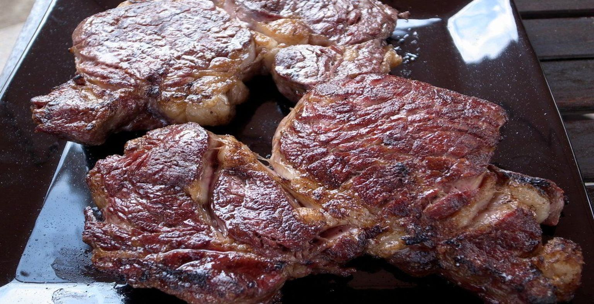

Apple Steaks in the <img> element
The Basics
After this paragraph element, use the one of your image files to render an image with the src, width, height, and alt attributes.

Using srcset & sizes
After this paragraph element, practice using the your set of 3 images by using the srcset and sizes attributes in the img element. Use the w (width) value for the srcset. Use the max-width attribute with the px (pixel) value for the sizes.

Apple Steaks in the <picture> element
Below, practice creating a picture element that:
-
uses the standard
<img>as the default use of the smallest image file, -
but the
<picture>also uses the<source>element to tell the browser to use the next largest image at a specified minimum width of 600px, -
but the
<picture>uses the<source>element to tell the browser to otherwise use the cropped version of your medium-sized file.
Be sure to reference the Simmons video for support. If you need more help, refer to the MDN page about the picture element and its attributes that I ask you to use above.